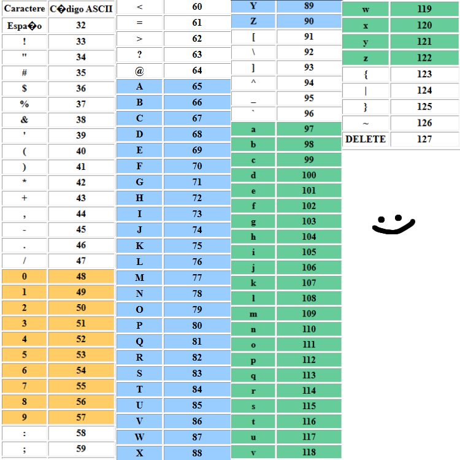
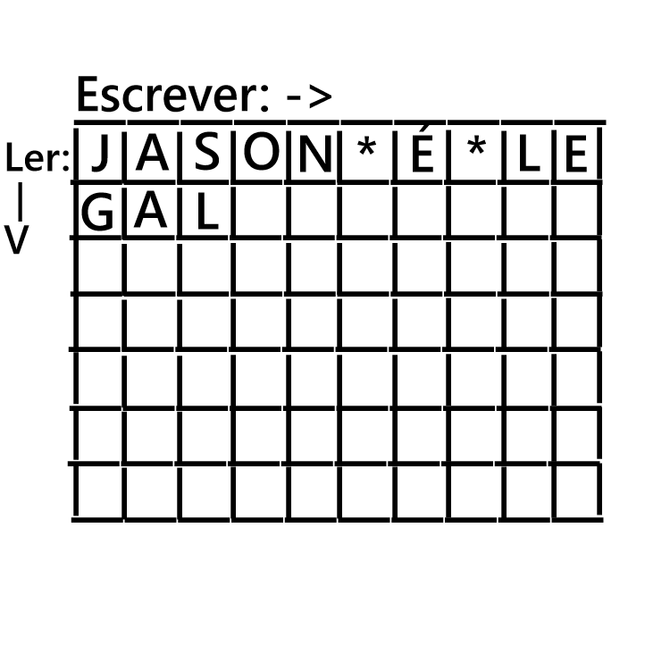
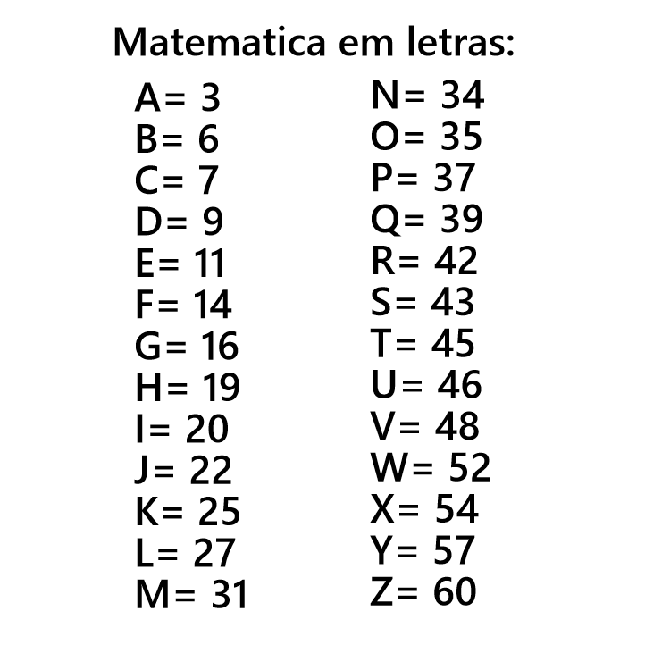

Esta é uma biblioteca de cifras, alfabetos, linguas, enigmas e códigos. Procure o que quiser pesquisando aqui!
(este site foi feito originalmente para um certo enigma que estou fazendo, e provavelmente o meu professor vai tentar decifra-lo)
(recomendo que use computador para usar esse site porque a minha referencia é sempre o pc, e ainda mais nessa atualização que veio o menu dai no celular fica horrivel, vou tentar arrumar!)
* ᑕIᖴᖇᗩS *
* Vigenère
A cifra de Vigenère funciona mudando a posição das letras de acordo com uma palavra(senha), então vamos pegar cada letra da minha palavra(senha) e vou trocar pelo numero dela no alfabeto
Logo após isso vamos andar o numero de casas correspondentes a senha na nossa palavra codificada(contamos a quantidade de casas começando da letra original)
Se a senha não tiver a mesma quantidade de letras que a palavra(sendo mais ou menos letras) iremos cortar a senha ou repetir parte dela.
Exemplo :
Palavra: Jason. Senha: Oi. O = 15, I = 9. resultado da senha = 15, 9 (Oi)
Oi = 2 letras, Jason = 5 letras. logo a senha vira: Oioio = 15, 9, 15, 9, 15
J+15 = X, A+9 = I, S+15 = G, O+9 = W, N+15 = B. Jason = XISGWB.
* César
A cifra de César funciona mudando a posição das letras nas palavras usando "sifts"(indo um certo numero fixo de casas para esquerda ou para a direita).
Exemplo :
Jason + César com shift 6 para direita
Resposta de Jason com shift 6 é: OFXTS.
* Atbash
A cifra de Atbash funciona trocando a letra da palavra codificada pela letra do alfabeto ao contrario.
Exemplo :
Alfabeto normal.
A-B-C-D-E-F-G-H-I-J-K-L-M-N-O-P-Q-R-S-T-U-V-W-X-Y-Z
Igual a...
Alfabeto ao contrario.
Z-Y-X-W-V-U-T-S-R-Q-P-O-N-M-L-K-J-I-H-G-F-E-D-C-B-A
Então logo, Jason em Atbash fica = Qzhlm.
* Código morse
O código morse funciona mudando as letras do alfabeto por traços ("-") e pontos (".")
Para usar o código morse é como usar o alfabeto normal, apenas quando for escrever uma palavra deixe um espaço entre uma letra e outra, e quando terminar uma palavra e começar a próxima adicione um "/".
Alfabeto do código morse abaixo.

Exemplo :
Jason = .--- .- ... --- -.
Sou uma aranha = ... --- ..- / ..- -- .- / .- .-. .- -. .... .-
* Pigpen🐷
O alfabeto Pigpen funciona como o alfabeto normal só mudando a estética do caractere.

Exemplo :
Jason = ⟓⅃v⟃⊡
Eu sou uma aranha = □< v⟃< <⟄⅃ ⅃⟔⅃⊡⊓⅃
eu recomendo usar algum site para codificar uma palavra no Pc ou celular.
- Decoder Pigpen -* ASCII
O código ASCII é um sistema que converte letras, numeros e simbolos por numeros binários. ele serve como um tradutor universal para que diferentes dispositivos entendam e troquem informações entre si.
Exemplo :

Então seguindo a tabela fica:
Jason = 74 97 115 111 110
* Rutsh
A cifra de Rutsh funciona usando duas cifras, cifras de Atbash e a A1Z26 logo depois adicionando uma regra para separar as letras de palavras, e palavras de palavras
ficou meio estranho isso ksks
Exemplo :
Eu sou Jason + Atbash = Vf hlf Qzhlm, Vf hlf Qzhlm + A1Z26 = 22 , 6, 8, 12, 6, 17, 26, 8, 12, 13
Agora para separar letras da palavras usamos apenas um traço ("-") e para separar palavras usamos dois traços ("--"), então fica:
22-6--8-12-6--17-26-8-12-13
(Essa foi minha primeira cifra, então é meio paia mesmo kksk)
* Voutvish
O alfabeto Voutvish funciona como o alfabeto normal só mudando a estética do caractere.
(A fonte do alfabeto não existe em teclado ou na web porque é meio que meu e nunca postei nada sobre, menos esse site obviamente)

* Seltaeb
Por enquanto a minha cifra mais complexa ksks
A cifra de Seltaeb funciona pegando cada primeira letra da frase para criar outra palavra, e depois organizando a frase com (,), (-) e (").
(,) = separar palavras, (-) = significa que não tem mais letras nessa parte, (") = termina a frase.
como "Eu brincava = eb,ur,-i,-n,-c,-a,-v,-a"" fica quase toda a palavra escrita normalmente, nesse caso troque a sequencia virando "Eu brincava = eb,ur,°a-,v-,a-,c-,n-,i-""
A cifra também funciona se você fizer uma tabela com a palavra sendo escrita de cima para baixo, e codificada lendo da esquerda para direita.
Exemplo :
Eu sou Jason:
Normal:
Eu sou Jason = esj,uoa,-us,°n--,o--"
Usando Tabela:

o nome da cifra ao contrario fica "beatles", fica ai a ref ksk
* Neuuq
A cifra de Neuuq funciona como uma mistura de Quantrix e Seltaeb.
Faça uma tabela 8 x 10, coloque a sua frase da esquerda para direita deixando pontos/asteriscos como espaço entre palavras.
Depois escreva a frase codificada de cima para baixo e depois que acabar uma linha adicione uma virgula para indicar que acabou a palavra e um traço para indicar que não ter nenhuma letra nessa posição
depois apenas repita para cada linha abaixo, se for um texto grande quebre ele em partes (é a forma mais simples de sair desse problema)
Exemplo :
Jason é legal

Adicionando as regras da cifra fica
Jason é legal = jg,aa,sl,o-,n-,*-,é-,*-,l-,e-"
Essa cifra eu fiz junto com a Seltaeb por isso são parecidas e para mim são irmãs, fiquei bastante tempo matutando o que colocar colocar nessa cifra depois acabei misturando duas e adicionando uma regrinha.
Se você prestar atenção ela tem a mesma referencia que a Seltaeb porque invertendo o nome Neeuq fica Queen que tambem é nome de uma banda de musica(e pra mim eu acho as duas bandas tão parecidas que parecem irmãs)
Matematica em Letras
A cifra Matematica em Letras funciona pegando cada silaba da frase e fazendo contas de adição e subtração para codificar a frase.
Você deve somar todos os numeros (letras do alfabeto) que tem em cada silaba, se uma parte da frase ou palavra for separada como "pa-i" deve se fazer uma conta de subtração com o numero(letra) nesse caso "I" com o proximo numero.

Para indentificar se é apenas uma conta normal do Matematica em Letras, deve ter um ponto de interrogação seguido de uma aspas depois do igual ( =?" )
os numeros se formaram atraves da quantidade de linhas para fazer a letra, por exemplo: A=3 linhas, logo numero A=3. agora depois do A vem mais uma regra, toda letra deve ter a quantidade de linhas mais o numero anterior então B=3 linhas, B= 3+A(3) = 6, logo B=6.
Exemplo:
Jason a aranha = Ja-Son -A- A-ra-nha
JA = 22+3=?" , SON = 43+35+34=?" , A= 3-6=?" , A= 3-6=?" , RA= 42+3=?" , NHA= 34+19+3=?"
seria menos 1 em todos do j pra frente porque na fonte que eu escrevi o J não tem o chapeu igual o T (da pra perceber comparando o "J" que tem nesse comentario com o do alfabeto)
o nome surgiu de um meme do youtube chamado "matematyka em python", ele mostra como a lógica do python funciona de um jeito ao pé da letra, por exemplo 2+2= 22 e 22+22= 222
- Curiosidades Legais -
° As cifras foram criadas para passar informações sem serem lidas por qualquer um, um exemplo é o código morse que pode ser lido por um padrão de piscadas, toques em uma mesa, código em papel, sinalizar com luz etc.
° Um homem que tinha sido feito prisioneiro de guerra pelo Vietnã em 1965 chamado Jeremiah Denton foi forçado a fazer uma entrevista, atraves do código morse(piscando o olho repetidas vezes) ele disse "Torture"(tortura em portugues) evidenciando que os prisioneiros estavam sendo torturados.
° Existem mistérios e enigmas que nunca foram solucionados como o manuscrito de voynich(minha inspiração pro nome do meu alfabeto "voutvish"),
Vou continuar colocando curiosidades
atualizações
Versão 1.2 - atualização feita em 3 dia
Mudanças no Design do site: Divs das explicações com bordas quadradas, troca de transparencia do fundo para 0.9 (ficou menos transparente), background com cores mais vivas e o degrade ficou da esquerda para direita. Adicão do menu, modificação em copyright para adição da parte de atualizações, Código ASCII, tirei a barra de pesquisa para trocar pelo menu e adicionei um arquivo importante.
Cara demorou muito tempo pra vir essa atualização, principalmente pra fazer o bendito menu. o que eu achava que seria mais facil que programar uma barra de pesquisa foi muito repetitivo e cansativo.
Tambem existem milhares de sites e videos no youtube por exemplo que explicam e decodificam essas cifras e enigmas.
Recomendo bastante um canal em expecifico o nome é Rentune, se puder segue ele lá. Foi ele quem me "mostrou" essa parte do mundo, e por consequencia acabei criando esse site ksksk. A e eu deixei o site nesse estilo porque eu adoro coisas frutiger aero, é digamos meio nostalgico e tambem bonito.
A musica que toca é do youtube o nome é "2000s ~𝒩𝑜𝓈𝓉𝒶𝓁𝑔𝒾𝒸~ Frutiger Aero Playlist"
- Canal Rentune - - Perfil do JasonAranhudo no Github -- Pagina feita pelo usuario do Github JasonAranhudo -